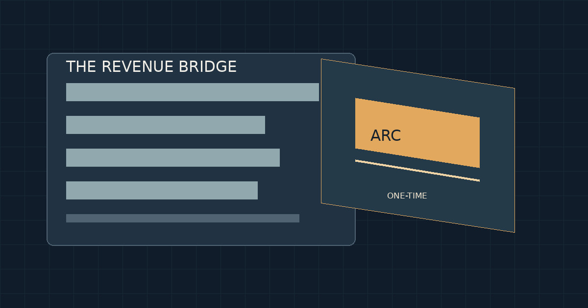

Circle’s ARC Revenue Changed the Growth Story. The Valuation Question Is Harder.
A $181.8 million token presale turned a contracting quarter into headline growth. What the filings, valuation arithmetic, and Arc blockchain evidence actually show.
· Financial data as of the dates specified below

Circle’s third-quarter numbers offered two stories at once. On the surface, revenue and reserve income rose nearly 17% from a year earlier. Remove a single $181.8 million item tied to an institutional presale of ARC tokens, however, and the same quarter shows a decline of roughly 7.7%. Both statements can be true. The problem begins when investors treat them as interchangeable.
That distinction is the center of my reading of Circle’s September 2026 quarter. This is not an allegation that the company concealed the presale. The amount and its accounting treatment appear in the company’s filings. It is a question of economic interpretation: how much of the reported growth came from a repeatable business, and how much came from an event whose timing and future recurrence are fundamentally different?
The answer matters beyond one company. Crypto businesses increasingly straddle conventional financial services and self-issued digital assets. Their income statements can blend reserve yield, transaction fees, infrastructure services and token monetization. Each may be legitimate revenue. They do not deserve the same valuation multiple.
The quarter changes when ARC comes out
Circle reported $864.888 million in third-quarter 2026 revenue and reserve income, compared with $739.759 million a year earlier. The reported increase was $125.129 million. ARC presale revenue alone was approximately $181.8 million—larger than the entire year-over-year increase. Without it, third-quarter revenue was about $683.088 million.
Two views of the same quarter
| Revenue component | Q3 2025 | Q3 2026 | Year-over-year |
|---|---|---|---|
| Reserve income | 711.2 | 657.6 | −7.5% |
| Other revenue, excluding ARC | 28.5 | 25.5 | −10.7% approx. |
| Revenue excluding ARC | 739.8 | 683.1 | −7.7% |
| ARC presale revenue | — | 181.8 | Not comparable |
| Total reported revenue | 739.8 | 864.9 | +16.9% |
Sources: Circle Q3 2026 earnings release and Form 10-Q, Note 11. Ex-ARC amounts are arithmetic adjustments, not a company-reported GAAP measure. Earnings exhibit · Form 10-Q.
The core reserve-income line was already under pressure. It fell from approximately $711.2 million to $657.6 million as lower interest rates more than offset growth in average USDC circulation. The average supply rose about 8% year over year to $73.3 billion. That is a meaningful operating achievement; it simply did not translate into higher reserve income during this period.
There is a bullish interpretation here. More USDC circulating at lower prevailing rates may create future operating leverage if distribution economics improve or rates stabilize. Yet the bearish interpretation deserves equal attention: volume and adoption metrics can grow while the dollars retained by shareholders stagnate. USDC’s reported $13.9 trillion of quarterly on-chain transfer volume, up roughly 49% year over year, is not itself revenue.
The headline is about growth. The investigation is about what kind of growth shareholders are paying for.
What the token presale actually represents
The disclosed ARC presale covered 807.5 million tokens at $0.30 apiece, implying roughly $242.2 million in proceeds. About $181.8 million was recognized as revenue in the quarter; approximately $60.4 million remained deferred. The presale represented roughly 8.075% of a stated 10 billion-token initial supply.
At the presale price, multiplying the entire initial supply by $0.30 produces a $3 billion implied fully diluted token valuation. It is not a demonstrated market capitalization. Nor is it evidence that Circle could sell its remaining tokens at that price. A private contractual price and a liquid public market are different things.
The timing is also consequential. Circle disclosed a September 14 genesis mint and a subsequent public mainnet launch. Its materials distinguish this network launch from any public launch of the ARC token. Presale arrangements include contractual conditions tied to the network’s transition toward proof of stake, with a May 8, 2028 milestone associated with specified purchaser repayment rights. That provision establishes a potential contractual exposure, not a prediction that repayment will occur.
Company materials described an initial allocation framework of 60% for ecosystem purposes, 25% for Circle and 15% for a reserve. Those percentages describe an issuer-stated allocation framework. They are not the same as a wallet-by-wallet demonstration of beneficial ownership, unlock status or freely circulating supply.
The cash-flow story has the same fault line
For the first nine months of 2026, Circle reported approximately $523 million of operating cash flow, versus $293 million in the comparable 2025 period. The company identified the roughly $242.2 million ARC presale proceeds as a major driver of that improvement. Subtracting those receipts produces a simple illustrative $280.8 million—slightly below the prior-year figure.
That subtraction is deliberately limited. Cash receipts and revenue recognition are different accounting events, and removing a single receipt does not rebuild taxes, working capital or related operating costs. Still, the arithmetic exposes why I would hesitate to extrapolate the nine-month cash-flow growth rate into an enduring run rate.
What does CRCL’s valuation assume?
For a reproducible market anchor, I use CRCL’s November 6, 2026 closing price of $67.88. A newer November 9 indicative quote near $66 was observed, but the available market snapshots did not share a cleanly comparable execution timestamp. The historical close avoids implying intraday precision the evidence cannot support.
Using approximately 256.55 million outstanding shares gives an equity capitalization near $17.41 billion. A separate diluted-share reference—267.776 million weighted-average diluted shares for the third quarter—implies roughly $18.18 billion when multiplied by the same closing price. These are different denominators: quarterly weighted-average diluted shares are not a verified current fully diluted capitalization table.
Circle reported approximately $317 million of third-quarter adjusted EBITDA. Removing $181.8 million of ARC revenue dollar for dollar leaves about $135.2 million, or $540.8 million when annualized by multiplying by four. This is a sensitivity, not a company-reported ex-ARC EBITDA figure: it assumes no offsetting ARC-specific costs and repeats one quarter four times.
Using approximately $1.70 billion of reported corporate cash and no outstanding convertible debt at quarter-end gives a simplified enterprise value near $15.71 billion. Against the illustrative annualized normalized EBITDA, that is approximately 29.1 times. Other enterprise-value adjustments could change that number.
How fragile is the earnings multiple?
| Scenario | Annualized EBITDA |
|---|---|
| Distribution costs 10% lower | 705.5 |
| Base normalization | 540.8 |
| Distribution costs 10% higher | 376.1 |
| Reserve-rate sensitivity +100 basis points | 908.8 |
| Reserve-rate sensitivity −100 basis points | 172.8 |
Distribution-cost scenarios vary the approximately $412 million quarterly cost base by 10% and annualize the change. Rate scenarios apply the 10-Q’s approximately $739 million annual reserve-income and $371 million annual distribution-cost sensitivity per 100 basis points, net $368 million. Other variables held constant. Source: Circle Form 10-Q.
Explore the earnings sensitivity
Adjust two independent assumptions around the $540.8 million annualized ex-ARC baseline. This calculator is illustrative; it is not a price target.
Implied simplified EV / annualized ex-ARC EBITDA: 29.1×
Formula: $540.8M − (4 × $412M × cost change) + ($368M × rate change / 100 bps). Rate and cost shocks are mechanically combined for exploration; real-world interactions may differ.
What the Arc blockchain can—and cannot—settle
Arc Mainnet is not merely a slide-deck proposition. A November 9, 2026 observation identified chain ID 5042, with USDC as the native fee currency. At 14:33:39 UTC, indexed block 30,363,526 contained nine transactions and used about 3.83% of its gas limit. That is a narrow but concrete indication of an operating network.
It is not a measure of durable adoption. A single block cannot establish active-user trends, organic transaction demand, recurring network fees, validator decentralization or economic value accruing to Circle shareholders. Nor does it establish that the issuer-described token allocations correspond to verified balances in identifiable wallets. Those questions require a longitudinal activity series and authenticated token-contract and treasury-address mappings.
This is where I think the debate is most likely to go wrong. Bulls may treat the existence of a live network as evidence that a large token valuation is justified. Bears may treat a presale-driven earnings quarter as evidence that the network has no future. Neither follows from the record. The chain can be real, the revenue recognized under the company’s accounting policies, and the investment valuation still be demanding.
What would change my view?
A stronger bullish case would show stable or rising revenue after excluding ARC presale recognition, sustained improvement in revenue less distribution costs, and evidence that Arc activity converts into repeatable economics. A stronger bearish case would show continuing ex-ARC contraction, persistent sensitivity to lower reserve yields, or future reported growth again relying heavily on episodic token events.
There is also a simpler possibility: the market already understands the distinction and values Circle primarily for the long-duration option on digital-dollar infrastructure. A roughly 29-times normalized annualized EBITDA multiple is not, by itself, proof of mispricing. It is a measure of how much improvement or strategic value investors may be anticipating.
My conclusion is narrower and more durable. Circle’s third-quarter headline growth was materially dependent on ARC presale revenue; its recurring earnings power deserves to be assessed separately. The market’s premium might ultimately prove justified, but the justification must come from repeatable economics—not from treating a token presale as though it were an ordinary quarter of stablecoin growth.
Source notes and definitions
- Circle, Q3 2026 earnings exhibit — reported revenue, reserve income and adjusted EBITDA.
- Circle, Form 10-Q for quarter ended September 30, 2026 — ARC presale accounting, deferred revenue, diluted shares, operating cash flow, risk disclosures and rate sensitivity.
- Circle investor relations — issuer presentations and ARC network disclosures; allocation framework is issuer-reported, not wallet-verified.
- CRCL market reference: November 6, 2026 NYSE close of $67.88; indicative November 9 snapshots were not used as a synchronized closing valuation. Outstanding-share capitalization uses approximately 256.55 million shares; share count and market capitalization are rounded.
- Arc Mainnet reference: chain ID 5042; block 30,363,526 timestamped November 9, 2026 at 14:33:39 UTC. A single block establishes activity at that point, not aggregate adoption.